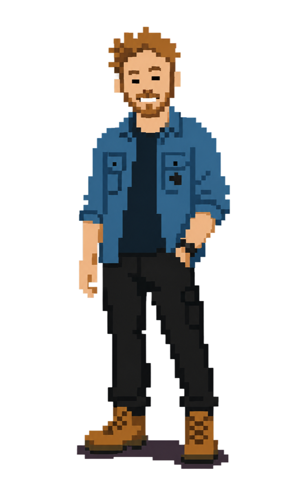

STORYTELLING ROOTED IN EXPLORATION
ALEX MOLISKI
~ THE TRAIL ~
press ENTER or click
“The Trail”
AKA my portfolio
AKA my portfolio

© 2026 · MADE WITH CLAUDE CODE
STORYTELLING ROOTED IN EXPLORATION
~ THE TRAIL ~
press ENTER or click

© 2026 · MADE WITH CLAUDE CODE